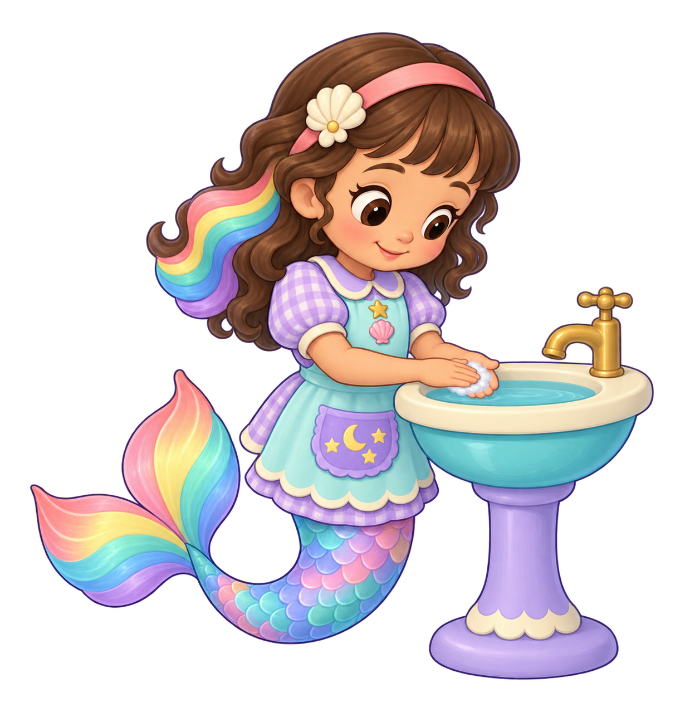
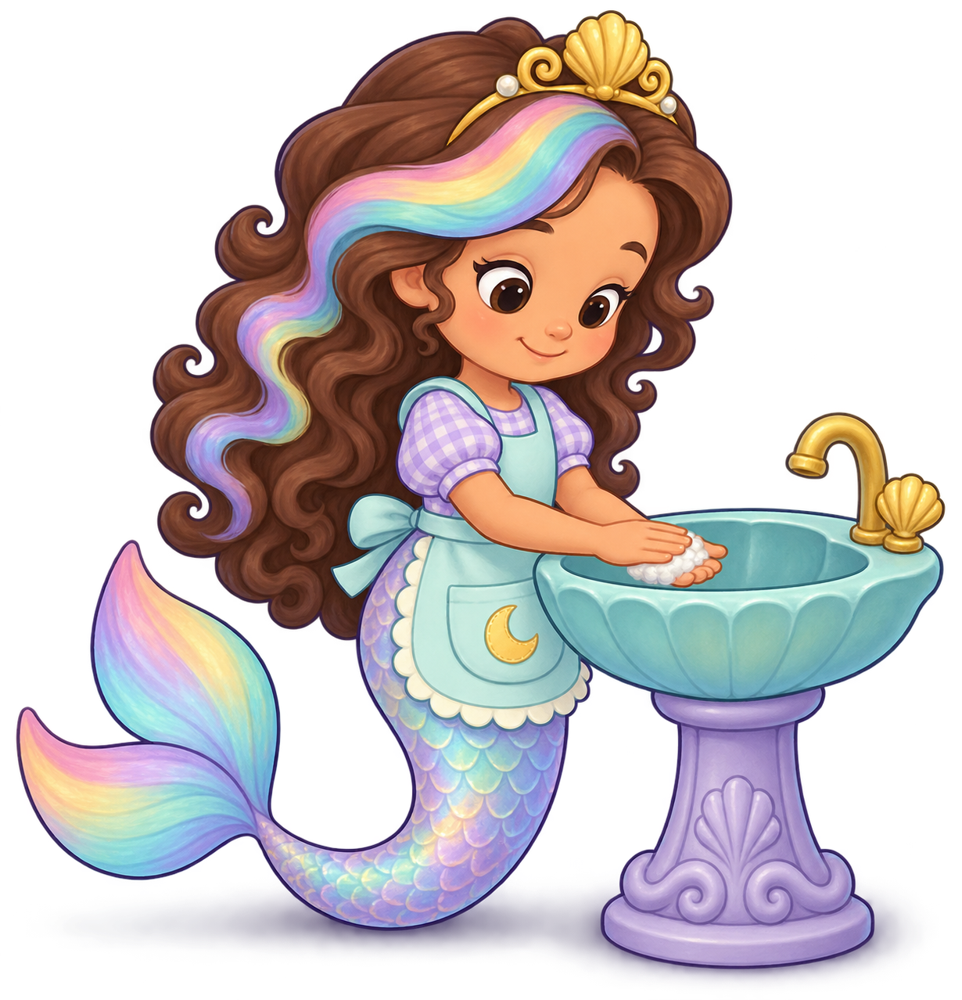

Broad pastel value bands, rounded chibi silhouette and clean purple contours read as painted storybook art. Skin and fingers remain simplified; no lifelike photographic anatomy.
Two fresh text-only built-in ImageGen attempts. No existing reference image uploaded or target edited. A2 reaches the provisional4.5 still-source floor; gaze/style4.6, palm contact4.5. Current game action3.9/attention3.8 remain unchanged. Both originals and all22 individual reviews are preserved.

Broad pastel value bands, rounded chibi silhouette and clean purple contours read as painted storybook art. Skin and fingers remain simplified; no lifelike photographic anatomy.
Downward head angle and both pupils clearly attend to the rubbing palms. Quiet smile supports helping rather than presenting to the camera.
Pink headband, cream shell-flower clip, brown curls/bangs and broad trailing rainbow lock restore the current Nursery design description. Fresh drawing remains a new source, not an exact approved-source edit.
Aqua apron, lilac gingham puff sleeves and cream-edged collar, chest gold star/pink shell and scalloped lavender crescent/three-stars pocket restore the known costume grammar. Waist/sleeve proportions still need actual-family transition review.
Both low elbows, forearms and wrists connect continuously to her shoulders/body. No detached arm or extra limb; practical work height.
Near fingers lie across a separate cupped far palm low inside the basin boundary. Foam hides part of the far palm, keeping this at the inclusive floor; no continuous rubbing movement is established.
Small foam patch remains between hands. No lather reaches the spout, no uncontrolled splash/reward effect and off tap is clear.
Complete curled aqua/lilac/pink iridescent tail and two large rainbow fin lobes retain child-readable identity. Larger scale bands and paler fin are a fresh variant requiring mounted/family/phone review.
Warm cream rim, aqua bowl/turquoise water, short gold down-spout/cross-handle, lavender pedestal/cream scallops and broad rounded foot restore the existing fixture grammar. Work/support relation is a still-source opinion.
All major tiara-free headband, hair, body, hands, tail/fin and pedestal contours are visible. Alpha>=8 bounds retain about4% margins; the requested10% was not delivered, and low-alpha trace reaches canvas limits. Whole-canvas technical padding is required before runtime packaging; no cropped limb or repaired pixel is claimed.
Meaningful down-gaze and connected low palm pose restore style/identity at a provisional source floor. Preserve native unchanged, test the exact source at actual work scale and the approach/rub/rinse/clean transitions. Source selection does not pass motion or current game.
Complete A2 review · Native provenance · A2 final prompt

Rounded child face and broad lavender/aqua paint bands improve simplification; fine curls/scales and softly rendered skin still make this an inclusive refinement priority.
The tilted head and pupils clearly attend to the touching palms. Childlike rounded cheeks, broad eyes and quiet smile read without text.
New gold tiara and forehead rainbow forelock replace the established Nursery pink headband/cream shell clip and broad trailing rainbow lock; beautiful independent drawing does not preserve the current costume family.
Aqua apron and lilac gingham remain, but collar, chest star/shell ornaments and lilac moon/stars pocket are replaced by a cream-edged aqua moon pocket. Rebuild the established details before source selection.
Both upper arms and low elbows connect visibly to the torso; neither wrist floats. Anatomical proportions are simplified and consistent.
Near palm lies over a distinct cupped far palm above the basin, with low wrists and finger overlap rather than a raised prayer clasp. This still is not proof of reciprocal motion.
Small white foam lies between the palms; none reaches the off tap and no wash outcome is falsely displayed.
Complete curved tail and paired rainbow fin retain identity, but scale colours/order and pale washed fin differ from the current stronger lavender/rainbow family; compare at actual size.
Support is clear and usable, but shell-fluted rim/bowl, curved tap and ornate base replace the existing cream-rim basin/cross-handle tap/simple scalloped pedestal.
Major body and fin silhouettes are present, but shadow reaches left and bottom native limits instead of generous transparent padding. Alpha edge bounds alone do not establish a cropped limb.
Useful down-gaze and low reciprocal-contact pose, but costume/hair/fixture continuity remains materially below4.5. Preserve as rejected, unbound source; no current-game score transfer.
Complete A1 review · A1 final prompt · Rejected local A2 motion: every41 native frame
Native files are unchanged outside runtime. No full motion/transition/mounted/device/child/owner/all-job approval; pending original reference upload remains blocked.